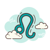
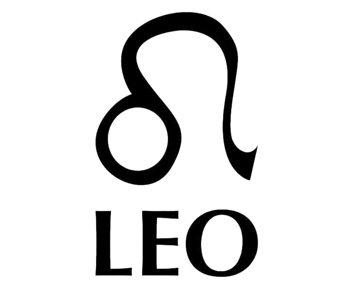

Info: Ο Λέων (♌) είναι αστρολογικό ζώδιο, το οποίο και συνδέεται με τον αστερισμό του Λέοντα. Ο Λέοντας συμβολίζει δύναμη, μεγαλοπρέπεια, ηγεμονική δύναμη.
Σύμφωνα με τον τροπικό ζωδιακό, ο Λέων καταλαμβάνεται από τον Ήλιο από 23 Ιουλίου μέχρι 23 Αυγούστου. Στον αστρικό ζωδιακό, ο αστερισμός καταλαμβάνεται κατά την περίοδο από 16 Αυγούστου
έως 15 Σεπτεμβρίου. Το ζώδιο απέναντι από το Λέοντα είναι ο Υδροχόος.
Πιο αναλυτικά τα βασικά χαρακτηριστικά του Λέων:
Ημερομηνίες:
23 Ιουλίου – 23 Αυγούστουυ
Στοιχείο:
Φωτιά (Πάθος)
Ποιότητα:
Σταθερό (Γοητεία και Ισχυρή θέληση)
Κυβερνήτης Πλανήτης:
Ο Ήλιος (συμβολίζει τη ζωτικότητα, την αυτοέκφραση και το "εγώ")
Αντίθετο Ζώδιο:
Ο Υδροχόος (αντιπροσωπεύει τη συλλογικότητα, σε αντίθεση με τον ατομικισμό του Λέοντα)
Θετικά:
Ηγετικός , Γενναιόδωρος , Ειλικρινής
Αρνητικά:
Εγωκεντρικός, Αυταρχικός , Αλαζόνας


Χαρακτηριστικά & Προσωπικότητα του Λέοντα
Ο Λέων είναι ένα ζώδιο που ξεχωρίζει για την αυτοπεποίθηση, τη λάμψη και την έντονη προσωπικότητά του. Από τα βασικά χαρακτηριστικά του είναι η γενναιοδωρία, η ανάγκη για αναγνώριση και η φυσική του τάση να βρίσκεται στο επίκεντρο της προσοχής. Είναι άνθρωπος που εκπέμπει ενέργεια και συχνά εμπνέει τους γύρω του με τον δυναμισμό και την παρουσία του.
Το ζώδιο αυτό ανήκει στο στοιχείο της φωτιάς, κάτι που τον κάνει παθιασμένο, δημιουργικό και γεμάτο ζωντάνια. Οι Λέοντες αγαπούν τη ζωή, τη χαρά και την έκφραση του εαυτού τους, ενώ δεν αντέχουν να περνούν απαρατήρητοι ή να νιώθουν ότι δεν εκτιμώνται.
Η προσωπικότητα του Λέοντα χαρακτηρίζεται από αυτοπεποίθηση, υπερηφάνεια και έντονη θέληση. Είναι άνθρωπος που ξέρει τι θέλει και δεν φοβάται να το διεκδικήσει. Παρόλο που μπορεί να φαίνεται εγωκεντρικός, έχει μεγάλη καρδιά και είναι ιδιαίτερα προστατευτικός με τους ανθρώπους που αγαπά.
Στην προσωπικότητά του κυριαρχεί η ανάγκη για δημιουργία, αναγνώριση και επιτυχία. Θέλει να αφήνει το στίγμα του σε ό,τι κάνει και να ξεχωρίζει μέσα από τις πράξεις και τα ταλέντα του.
Καριέρα & Στοιχείο Λέοντα
Στην καριέρα, ο Λέων αποδίδει εξαιρετικά σε επαγγέλματα που απαιτούν ηγεσία, δημιουργικότητα και έκφραση. Μπορεί να διακριθεί σε τομείς όπως η υποκριτική, η μουσική, η διοίκηση, το marketing, η επιχειρηματικότητα και γενικά σε κάθε χώρο που του επιτρέπει να ξεχωρίσει.
Η φυσική του αυτοπεποίθηση τον βοηθά να αναλαμβάνει ηγετικούς ρόλους, ενώ η δημιουργικότητά του τον κάνει να βρίσκει λύσεις με πρωτότυπο τρόπο.
Ο Λέων ανήκει στο στοιχείο της φωτιάς, το οποίο σχετίζεται με την ενέργεια, το πάθος και την έκφραση. Αυτό το στοιχείο τον κάνει ιδιαίτερα δυναμικό και ενθουσιώδη, ενώ του δίνει την ικανότητα να εμπνέει και να κινητοποιεί τους άλλους γύρω του.
Συμβατότητα & Σχέσεις Λέοντα
Όσον αφορά τη συμβατότητα, ο Λέων ταιριάζει ιδιαίτερα με άλλα ζώδια της φωτιάς, όπως ο Κριός και ο Τοξότης, καθώς μοιράζονται πάθος, ενέργεια και ανάγκη για δράση. Επίσης, έχει πολύ καλή χημεία με ζώδια του αέρα, όπως οι Δίδυμοι και ο Ζυγός, τα οποία τον βοηθούν να εκφράζεται και να διατηρεί πνευματική ισορροπία.
Οι σχέσεις του Λέοντα βασίζονται στο πάθος, τη γενναιοδωρία και την αφοσίωση. Θέλει να νιώθει ότι αγαπιέται και εκτιμάται βαθιά μέσα στη σχέση. Δίνει πολλά όταν αγαπά, αλλά χρειάζεται και αναγνώριση από τον σύντροφό του για να νιώθει ασφαλής συναισθηματικά.
Στον έρωτα είναι έντονος, ρομαντικός και προστατευτικός. Απολαμβάνει τις δυνατές σχέσεις που έχουν ενθουσιασμό, ενέργεια και αμοιβαίο θαυμασμό. Για να λειτουργήσει μια σχέση μαζί του, χρειάζεται σεβασμός, θαυμασμός και ειλικρινής συναισθηματική σύνδεση.
Συχνές Ερωτήσεις για τον Λέοντα (FAQ)
❓ Ποια είναι τα βασικά χαρακτηριστικά του Λέοντα;
Ο Λέων θεωρείται ένα από τα πιο δυναμικά, εξωστρεφή και χαρισματικά ζώδια του ζωδιακού κύκλου. Ανήκει στο στοιχείο της Φωτιάς, κάτι που του προσδίδει έντονη ενέργεια, αυτοπεποίθηση και φυσικές ηγετικές ικανότητες. Οι άνθρωποι που έχουν γεννηθεί κάτω από αυτό το ζώδιο ξεχωρίζουν συχνά για την παρουσία τους, τη δημιουργικότητά τους και την ανάγκη τους να εκφράζονται με τρόπο έντονο και εντυπωσιακό. Ο Λέων αγαπά να βρίσκεται στο επίκεντρο της προσοχής και έχει ισχυρή ανάγκη για αναγνώριση, σεβασμό και θαυμασμό από τους άλλους. Παρά την εξωστρεφή και δυναμική του εικόνα, διαθέτει μεγάλη καρδιά, γενναιοδωρία και βαθιά αφοσίωση προς τους ανθρώπους που αγαπά. Είναι προστατευτικός, πιστός και πρόθυμος να στηρίξει όσους θεωρεί σημαντικούς στη ζωή του.
❓ Είναι ο Λέων καλός στα οικονομικά;
Ο Λέων μπορεί να διαχειριστεί τα οικονομικά του με επιτυχία, ιδιαίτερα όταν έχει ξεκάθαρους στόχους και ισχυρό κίνητρο για επαγγελματική ανέλιξη. Η φιλοδοξία του και η ανάγκη του να ξεχωρίζει συχνά τον οδηγούν σε θέσεις που προσφέρουν οικονομική σταθερότητα και υψηλότερα εισοδήματα. Ωστόσο, έχει μια φυσική τάση προς την πολυτέλεια, την άνεση και τις εντυπωσιακές αγορές, καθώς του αρέσει να απολαμβάνει τη ζωή και να εκφράζει την επιτυχία του μέσα από το στυλ του. Αυτό μπορεί μερικές φορές να τον οδηγήσει σε υπερβολικά έξοδα. Όταν όμως καταφέρει να ισορροπήσει ανάμεσα στην απόλαυση και την αποταμίευση, μπορεί να δημιουργήσει μια ιδιαίτερα σταθερή και άνετη οικονομική βάση για το μέλλον του.
❓ Είναι ο Λέων αλαζόνας στις σχέσεις;
Ο Λέων μπορεί σε ορισμένες περιπτώσεις να εκδηλώσει συμπεριφορές που παρερμηνεύονται ως αλαζονεία, κυρίως όταν νιώθει ότι δεν λαμβάνει τον σεβασμό ή την αναγνώριση που θεωρεί ότι αξίζει. Η ισχυρή αυτοπεποίθηση και η ανάγκη του να έχει έναν βαθμό ελέγχου στις καταστάσεις μπορεί να δώσουν την εντύπωση υπεροψίας. Ωστόσο, πίσω από αυτή την εικόνα υπάρχει ένας άνθρωπος με βαθιά συναισθήματα, που επιθυμεί ειλικρινή αποδοχή και αμοιβαίο σεβασμό. Όταν νιώθει ασφάλεια και εκτίμηση μέσα σε μια σχέση, γίνεται ιδιαίτερα τρυφερός, γενναιόδωρος και προστατευτικός. Η συμπεριφορά του εξαρτάται σε μεγάλο βαθμό από το αν αισθάνεται ότι τον σέβονται και τον αναγνωρίζουν για την αξία του.
❓ Γιατί ο Λέων θέλει να είναι το επίκεντρο της προσοχής;
Ο Λέων έχει έντονη ανάγκη για αναγνώριση, θαυμασμό και αποδοχή, καθώς η αυτοεκτίμησή του συνδέεται σε μεγάλο βαθμό με τον τρόπο που τον βλέπουν οι άλλοι. Η επιθυμία του να βρίσκεται στο επίκεντρο της προσοχής δεν πηγάζει μόνο από ματαιοδοξία, αλλά και από βαθύτερη ανάγκη να εκφράσει τη δημιουργικότητά του και να νιώσει ότι η παρουσία του έχει σημασία. Του αρέσει να ξεχωρίζει μέσα από τις ικανότητες, το ταλέντο και την προσωπικότητά του, είτε σε κοινωνικό είτε σε επαγγελματικό επίπεδο. Όταν λαμβάνει θετική αναγνώριση, αισθάνεται ζωντανός, δυνατός και επιτυχημένος. Η ανάγκη αυτή αποτελεί κινητήρια δύναμη που τον ωθεί να προσπαθεί συνεχώς για αυτοβελτίωση και επιτυχία.
❓ Πώς αντιδρά ο Λέων όταν πληγωθεί συναισθηματικά;
Όταν ο Λέων πληγωθεί συναισθηματικά, η αντίδρασή του είναι συνήθως έντονη, καθώς επηρεάζεται βαθιά η περηφάνια και η αυτοεκτίμησή του. Μπορεί να απομακρυνθεί, να γίνει ψυχρός ή να εκφράσει θυμό, καθώς δυσκολεύεται να δείξει την ευάλωτη πλευρά του. Προτιμά να προστατεύει την εικόνα του και να μην αποκαλύπτει εύκολα τον συναισθηματικό του πόνο. Παρ’ όλα αυτά, κάτω από την εξωτερική του αντίδραση υπάρχει έντονο συναίσθημα και ανάγκη για κατανόηση. Αν νιώσει ότι υπάρχει ειλικρίνεια, σεβασμός και πραγματική αγάπη από την άλλη πλευρά, μπορεί να συγχωρήσει και να επαναφέρει τη σχέση. Η εμπιστοσύνη και η αναγνώριση παίζουν καθοριστικό ρόλο στη συναισθηματική του ισορροπία.
❓ Ποιες διάσημες προσωπικότητες ανήκουν στο ζώδιο του Λέοντα;
Πολλές γνωστές προσωπικότητες από τον χώρο της πολιτικής, της μουσικής, του κινηματογράφου και της ψυχαγωγίας ανήκουν στο ζώδιο του Λέοντα. Ανάμεσά τους βρίσκεται ο Barack Obama, ο οποίος ξεχωρίζει για την ηγετική του παρουσία και την επιρροή του σε παγκόσμιο επίπεδο. Η Jennifer Lopez αποτελεί χαρακτηριστικό παράδειγμα καλλιτέχνιδας με έντονη σκηνική παρουσία και δημιουργικότητα, ενώ η Madonna έχει αφήσει ανεξίτηλο αποτύπωμα στη μουσική βιομηχανία. Ο Chris Hemsworth και η Kylie Jenner συνδέονται επίσης με χαρακτηριστικά όπως η δυναμική παρουσία, η αυτοπεποίθηση και η ικανότητα να τραβούν την προσοχή του κοινού. Πολλοί αστρολόγοι θεωρούν ότι η λάμψη, η φιλοδοξία και η δημιουργικότητα αυτών των προσωπικοτήτων αντικατοπτρίζουν συμβολικά την ενέργεια του Λέοντα.
 ΚΡΙΟΣ
ΚΡΙΟΣ
 ΤΑΥΡΟΣ
ΤΑΥΡΟΣ
 ΔΙΔΥΜΟΙ
ΔΙΔΥΜΟΙ
 ΚΑΡΚΙΝΟΣ
ΚΑΡΚΙΝΟΣ
 ΛΕΩΝ
ΛΕΩΝ
 ΠΑΡΘΕΝΟΣ
ΠΑΡΘΕΝΟΣ
 ΖΥΓΟΣ
ΖΥΓΟΣ
 ΣΚΟΡΠΙΟΣ
ΣΚΟΡΠΙΟΣ
 ΤΟΞΟΤΗΣ
ΤΟΞΟΤΗΣ
 ΑΙΓΟΚΕΡΩΣ
ΑΙΓΟΚΕΡΩΣ
 ΥΔΡΟΧΟΟΣ
ΥΔΡΟΧΟΟΣ
 ΙΧΘΥΕΣ
ΑΡΙΘΜΟΛΟΓΙΑ
ΙΧΘΥΕΣ
ΑΡΙΘΜΟΛΟΓΙΑ